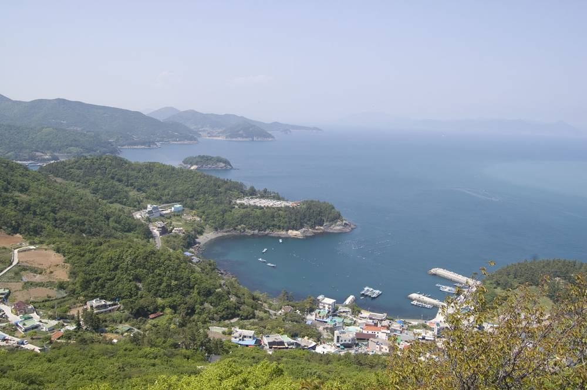

여수 4개 마을, 햇빛소득마을 3차 공모 신청…2차 조건부 5곳은 부지·주민 참여 절차 밟아, 계통 막힌 곳은 ESS 병행 검토

10월 30일 마감 3차 추가 공모, 관계기관 검토·행안부 평가위원회 심사 거쳐 12월 말 결과 발표…여수시 "행정 지원·맞춤형 컨설팅 제공"
전남 여수시의 4개 마을이 행정안전부의 '2026년 햇빛소득마을' 3차 추가 공모에 신청서를 냈다. 지난 10월 30일 마감된 이번 공모에 신청한 마을은 관계기관 검토와 행안부 평가위원회 심사를 거치며, 선정 결과는 12월 말 발표된다. 앞선 2차 공모에서 조건부로 선정된 여수 5개 마을은 사업 내용을 구체화하고 부지를 확보하며 주민 참여를 모으는 후속 절차를 단계별로 밟고 있다. 햇빛소득마을은 주민이 태양광 등 재생에너지 발전에 직접 참여하고 거기서 나온 수익을 마을공동체가 나누는 사업이다. 다만 여수 일부 지역은 전력계통의 여유 용량이 모자라 발전시설을 짓고 계통에 연결하는 데 어려움이 있어, 시는 한국전력의 배전선로 태양광 접속 용량 확대에 발맞추는 한편 연계가 힘든 곳에는 에너지저장장치(ESS)를 함께 설치하는 방안을 검토하고 있다. 여수시 관계자는 신청 마을이 최종 선정되도록 행정 지원과 "맞춤형 컨설팅"을 적극 제공하겠다고 밝혔으며, 신청 마을 이름과 발전 규모는 공개되지 않았다.
시민에너지 관점
2차 공모의 조건부 5곳에 이어 3차에 4곳이 더 신청했다는 것은, 한 도시 안에서도 주민이 발전소의 주인이 되려는 뜻이 이미 충분하다는 신호다. 계통이 모자라 ESS까지 얹으면 마을 몫이 줄어든다는 걱정은 타당하지만, 그 비용을 마을이 혼자 떠안지 않도록 짜는 것이 행정의 몫이지 사업을 미룰 이유는 아니다. 프랑스의 에네르지 파르타제(Énergie Partagée)는 시민 출자금을 모으고 지역 시민 발전 사업을 기획 단계부터 동반 지원하는 전국 조직으로, 마을이 서류와 협상을 홀로 감당하지 않고도 소유권을 지킬 수 있게 해 왔다. 여수시가 약속한 컨설팅이 심사 통과용 서류 지원에 그치지 않고, 조건부 마을과 신청 마을이 함께 계통·ESS 비용과 지분 구조를 따져 보는 상설 지원 창구로 이어져야 한다.
출처: 전남인뉴스 2026-11-03 김영희 원문 보기
출처: 여수넷통뉴스 2026-11-04 조찬현 원문 보기
麗水の4村が「日差し所得村」3次公募に申請…2次の条件付き5村は用地・住民参加の手続きへ、系統が詰まる地域はESS併設を検討
10月30日締め切りの3次追加公募、関係機関の検討と行政安全部評価委員会の審査を経て12月末に結果発表…麗水市「行政支援とオーダーメード型コンサルティングを提供」
全羅南道麗水市の4つの村が、行政安全部の「2026年日差し所得村（햇빛소득마을）」3次追加公募に申請した。10月30日に締め切られた今回の公募に申請した村は、関係機関の検討と行政安全部評価委員会の審査を経て、12月末に選定結果が発表される。これに先立つ2次公募で条件付き選定となった麗水の5つの村は、事業内容の具体化や用地確保、住民参加の取りまとめといった後続の手続きを段階的に進めている。日差し所得村は、住民が太陽光など再生可能エネルギー発電に直接参加し、そこから生まれた収益を村の共同体で分け合う事業だ。ただ麗水の一部地域では電力系統の空き容量が足りず、発電施設の建設や系統への接続が難しいため、市は韓国電力の配電線の太陽光接続容量の拡大に歩調を合わせる一方、接続が難しい地域にはエネルギー貯蔵装置（ESS）を併せて設置する案を検討している。麗水市の関係者は、申請した村が最終選定されるよう行政支援と「オーダーメード型コンサルティング」を積極的に提供すると述べたが、申請した村の名前や発電規模は公表されていない。
市民エネルギーの視点
2次公募の条件付き5村に続き3次でさらに4村が申請したことは、一つの都市の中でも住民が発電所の持ち主になろうとする意思がすでに十分にあることを示している。系統不足でESSまで載せれば村の取り分が減るという懸念はもっともだが、その費用を村だけに背負わせない仕組みを作るのが行政の役割であり、事業を先送りする理由にはならない。フランスのエネルジー・パルタジェ（Énergie Partagée）は市民の出資金を集め、地域の市民発電事業を企画段階から伴走支援する全国組織で、村が書類や交渉を一人で抱え込まずに所有権を守れるようにしてきた。麗水市が約束したコンサルティングは審査を通るための書類支援にとどまらず、条件付きの村と申請した村がともに系統・ESSの費用と持ち分の構造を検討する常設の支援窓口につなげるべきだ。
出典: 全南人ニュース 2026-11-03 キム・ヨンヒ 原文を読む
出典: 麗水ネットンニュース 2026-11-04 チョ・チャンヒョン 原文を読む
丽水4个村庄申请"阳光收入村"第三轮公募…第二轮附条件入选的5个村推进用地和居民参与程序，电网受阻地区考虑配套ESS
第三轮追加公募10月30日截止，经相关机构审查和行政安全部评审委员会审议后于12月底公布结果…丽水市"提供行政支持和定制化咨询"
韩国全罗南道丽水市的4个村庄向行政安全部"2026年阳光收入村（햇빛소득마을）"第三轮追加公募提交了申请。本轮公募已于10月30日截止，申请村庄将经过相关机构审查和行政安全部评审委员会审议，评选结果将于12月底公布。在此前第二轮公募中附条件入选的丽水5个村庄，正分阶段推进细化项目内容、确保用地、凝聚居民参与等后续程序。阳光收入村是由居民直接参与太阳能等可再生能源发电、并由村庄共同体分享发电收益的项目。不过，丽水部分地区电网富余容量不足，发电设施的建设和并网面临困难，丽水市一方面配合韩国电力公社扩大配电线路光伏接入容量，另一方面正在研究为并网困难地区配套建设储能系统（ESS）的方案。丽水市有关人士表示，将积极提供行政支持和"定制化咨询"，帮助申请村庄最终入选；申请村庄的名称和发电规模尚未公开。
市民能源视角
继第二轮5个附条件入选村庄之后，第三轮又有4个村庄申请，说明即便在一座城市之内，居民成为发电站主人的意愿也已十分充分。有人担心电网不足、再加上ESS会压缩村庄的收益份额，这种担忧合理，但设计好机制、不让村庄独自承担这笔费用正是行政部门的职责，而不是推迟项目的理由。法国的Énergie Partagée是一个汇集市民出资、从策划阶段起陪伴支持地方市民发电项目的全国性组织，让村庄不必独自应付文件和谈判也能守住所有权。丽水市承诺的咨询不应止于帮助通过评审的文书支持，而应发展为让附条件村庄和申请村庄一起核算电网与ESS费用、商定持股结构的常设支持窗口。
来源: 全南人新闻 2026-11-03 Kim Young-hee（김영희） 查看原文
来源: 丽水Netong新闻 2026-11-04 Cho Chan-hyun（조찬현） 查看原文
Four Yeosu villages apply in third round of Korea's Sunlight Income Village scheme; five conditionally selected in round two move to secure land and residents, ESS considered where the grid is full
The additional round closed on October 30 and results are due at the end of December after agency review and an Interior Ministry evaluation panel; Yeosu City pledges administrative support and tailored consulting
Four villages in Yeosu, South Jeolla Province, have applied in the third, additional round of the Ministry of the Interior and Safety's 2026 Sunlight Income Village programme. The round closed on October 30, and the applicant villages will go through review by related agencies and an evaluation committee of the ministry before selections are announced at the end of December. Five Yeosu villages that were conditionally selected in the second round are working step by step through follow-up procedures, including firming up project plans, securing sites and gathering resident participation. Under the programme, residents take part directly in solar and other renewable power generation and the village community shares the income. Some parts of Yeosu, however, lack spare grid capacity, making it hard to build plants and connect them, so the city is aligning with Korea Electric Power Corporation's efforts to expand solar hosting capacity on distribution lines while considering installing energy storage systems (ESS) alongside plants where connection is difficult. A Yeosu City official said the city would actively provide administrative support and "tailored consulting" so the applicant villages can be selected; the names of the villages and the planned generating capacity have not been disclosed.
Citizen Energy View
Four more villages applying in round three, after five conditional selections in round two, show that even within a single city residents already have ample will to own power plants. The worry that adding ESS because of grid shortages will shrink the villages' share is fair, but designing the scheme so villages do not carry that cost alone is the job of government, not a reason to delay. France's Énergie Partagée, a national body that pools citizen investment and accompanies local citizen energy projects from the planning stage, has helped communities keep ownership without having to handle paperwork and negotiations on their own. The consulting Yeosu has promised should not stop at helping villages pass the review but should become a permanent support desk where conditionally selected and applicant villages work out grid and ESS costs and ownership structures together.
Source: Jeonnamin News 2026-11-03 Kim Young-hee Read the original
Source: Yeosu Netong News 2026-11-04 Cho Chan-hyun Read the original